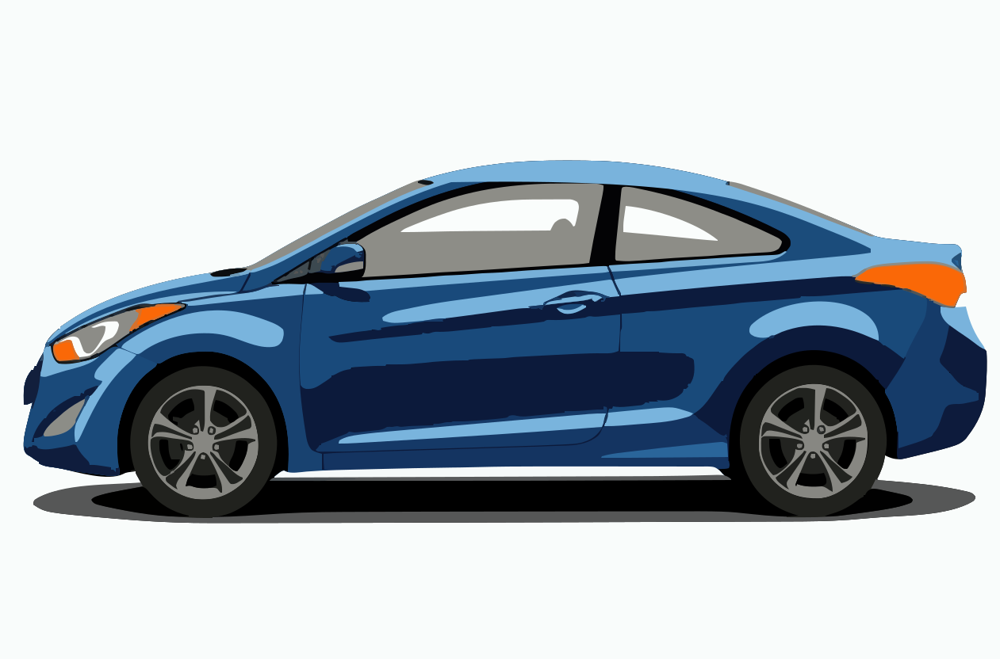

Source-linked reference
Find the part. Check the source.
Explore a vehicle zone or search the guide. Each entry points back to the supplied 2013 manual or workshop archive.
Vehicle map
Explore the Elantra
Choose a view, then select a zone. The zone list provides the same controls without the image.

Vehicle zones
Specifications and procedures
Maintenance entries
Accessible reading view
Maintenance section 7 and relevant specification tables from section 8, written as concise HTML entries. Open the cited page for the full table or procedure.
Original source
2013 U.S. owner’s manual
386 PDF pages. Maintenance begins on PDF page 292. This source is untagged; use reader mode for structured maintenance text.
Open the PDF viewer to load the manual.